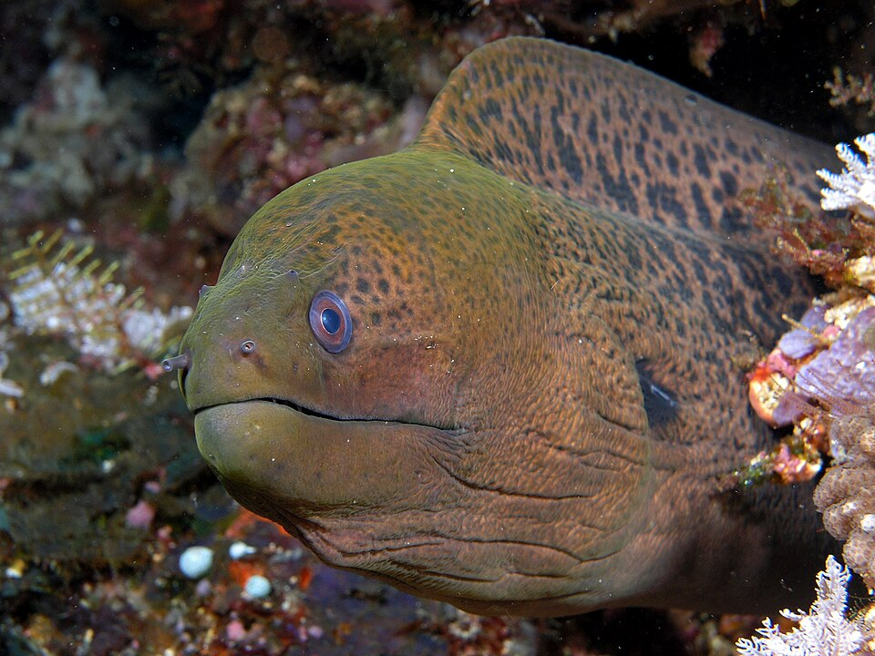

Moreia-gigante
Gymnothorax javanicus
Habitat
Vive em águas tropicais do oceano Índico e do Pacífico, principalmente em recifes de corais e áreas rochosas. Durante o dia, costuma permanecer escondida em fendas e cavidades, deixando apenas a cabeça visível.
Alimentação
É carnívora e alimenta-se de peixes, polvos, lulas e crustáceos. Caça principalmente durante a noite, utilizando seu olfato desenvolvido para localizar presas escondidas entre as estruturas dos recifes.
Características
Possui corpo comprido e musculoso, sem nadadeiras peitorais, com pele lisa e sem escamas aparentes. Sua coloração costuma apresentar tons de marrom e manchas mais claras, formando um padrão semelhante a uma rede. Sua boca possui dentes afiados e uma segunda mandíbula localizada na garganta, chamada mandíbula faríngea.
Curiosidades
- A mandíbula faríngea avança em direção à boca para ajudar a capturar e conduzir presas até a garganta.
- Muitas vezes abre e fecha a boca repetidamente para movimentar água pelas brânquias e respirar.
- Apesar da aparência intimidadora, geralmente evita o contato com seres humanos quando não é provocada.